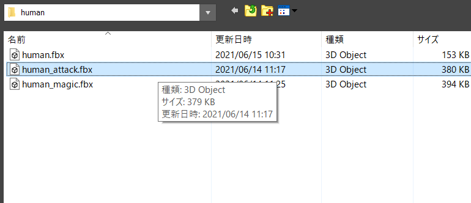

3.1 アニメーションベント
3ds Maxでは、「アニメーション」のデータを出力する際に、「アニメーションイベント」というものを設定できます。
では、「アニメーションイベント」とはどういうものでしょうか？
例えば、「プレイヤーの攻撃アニメーション」は以下のようなものです。
しかし、この「攻撃アニメーション」の全てで攻撃判定をしたいわけではありませんよね？
下記のような、「剣を振り回している間」だけ攻撃判定を取りたいわけです。
そのような時に使用するのが、「アニメーションイベント」という訳です。
「アニメーションイベント」を使用すれば、「アニメーションの再生中に任意のタイミングで、何らかの処理を実行する」ことができます。
これを使用すれば、さきほどの「剣を振り回す間だけ、攻撃判定をする」ということが可能なような気がしませんか？
3.2 通常攻撃のアニメーションイベント
ではまず、3ds Maxで「アニメーションイベント」の「任意のタイミング」を設定しましょう。
では、3ds Maxを開いて、Assets/modelData/humanのhuman_attack.fbxを読み込んでください。
